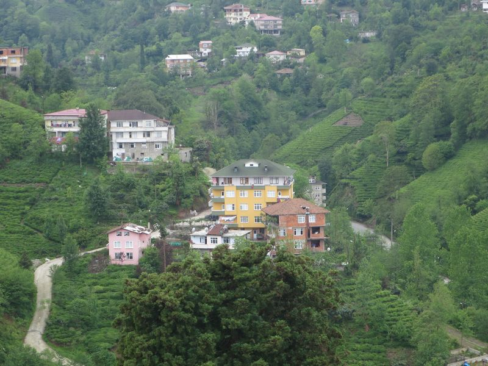

五月五日 (四)
不在酒店吃早餐，到外面餐廳吃地道炒蛋 menemen，但好像沒有什麼特別的。結果回酒店再吃，補番啲芝士同橄欖。 XD
來 Trabzon 是為了 Sumela Monastery，但因關閉了，這天轉了去附近的城市逛，自然風景例如山水湖泊都看到夠了，所以去了東面個多小時車程的 Rize。
網上或旅遊書，關於 Rize 的資料都好少，巴士去到 Rize 司機叫我下車，之後都沒有頭緒，究竟身在何方，只知道我要去的是 Atatürk Square (又係佢)。但都不是辦法，在一個公園，見到有免費 wifi，就去地圖看，可是 MS 的地圖廢得很。
反而，在一條街見到有一間賣書賣文具的店，就入去問路，雖然職員都不懂，但有電腦，即上網用 google map 看現在身在何方。去到 Atatürk Square，先到 tourist information centre。這個中心和 Trabzon 的一樣好，甚至更好，員工更加友善，英語又是良好，一樣有詳細地圖和意見，最正是有一本好厚的 travel guide，好厲害，製作得非常好，由 Rize 至東面幾個城市，以及東南面的郊外地區都有介紹。
我也是看這本書，才知道附近有個叫 Pileki Cave 地方，別的地方完全沒有相關介紹，單是這本書的地方和活動都可以去幾天。最正的還是這書對食物的介紹，對黑海沿海特別的食物，尤其是 Rize 的，圖文並荗，原來這裏最出名的是 hamsi 飯和麵包，更說未吃過不要離開 Rize。
逛遊客中心後面的博物館，免費的，很少東西，很少解說，所以很快就看完。看完去不遠的一間著名吃這裏的地道菜的餐廳 Evvel Zaman。Evvel Zaman 本身已經是古蹟，改為博物館兼餐廳，放置了很多舊時嘅嘢。
可惜一心想吃的 hamsi 乜乜乜要夜晚才有，但餐牌上都有很多獨特的食物，便叫了 muhlama，是一種用芝士整的東西，書中已說這是以前的人用來吃飽肚而整的，但我就是想試，結果，未吃到一半已經飽到不能再吃。
由餐廳旁的車路上斜一直行，去 Çaykur Tea Garden，但好失望，沒有什麼可以看，但可以喝喝茶，事實上亦有很多當地人三五成羣坐著喝茶，是真的只喝茶，多人的桌上放了一個成個爐咁款的茶壺。而我當然只喝一杯就夠。
下山時，在斜路有間工房，造木製品的，裏面的人見我八掛，竟然拉了我入場參觀，認識了這公場的一家人，是敘利亞人來。他用 corel draw 來設計，然後將圖的數據傳送去旁邊的械器。把木板放上機器上，機器就切割。
他們好好客，叫我留下過夜，但我明早趕機還是不行，交換 FB 時，和之前的新相識一樣，很奇怪我的 profile picture 是黑的，我支吾以對，買了點木製品就離開。行去 Rize Castle，途中又見一間甜品店，又入去吃甜品。
我愛上了土耳其甜品，一有機會便吃，和店主傾偈，又雖要用 google translate，他打了句，don’t leave without visting Ayder。睇嚟我都 leave without doing 勁多嘢咁喎。
上到 Rize Castle，下起雨來，城堡上又有間餐廳，之前在茶葉工場找不到茶葉買，反而在這裏買得到。喝杯茶看完風景就下山，行去 octogar 搭車走，不知發生什麼事，海邊的公路大塞車，巴士又有故障去到一些車房維修，所以好遲才回到 Trabzon。
途中還要遇上 security check，個疑似軍人上到車好惡，今天工場的人把那些木製品好有心機地包好在一個紙盒中。個軍人一見到就嘈生晒，要我拆開，又拿我的護照研究了一輪。
回到 Trabzon 下大雨，在海邊看看，見到一隻叫 Horon 61 的小船放在岸邊記念，我在 Bazar 的一些紀念品也見過，不知道有過什麼事績。
到另一間著名吃魚的餐廳 Murat Balık 吃，好味。回到酒店，是我第一次在土耳其見到小強，打不到，躲在機頂盒底，然後，我更見到盒底躲著另一隻……不過我仍睡得著。
menemen......
砧板咁大嘅麵包加砧板咁大嘅葉……
Evvel Zaman
muhlama......

2016 Turkey
❮ Previous
Next ❯